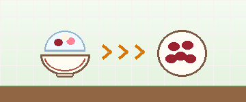
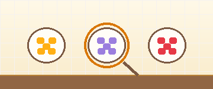
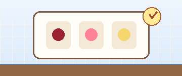
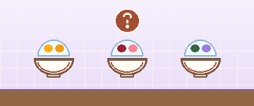

🥣 懷舊冰果室｜模式與設定
1. 遊戲模式（左右滑動選擇）
← 左右滑動 →

🟢 純動作引導
第 1～4 級
單一目標盆＋動態箭頭引導，專注上肢伸展與往返控制。

🟡 看單找料
第 2 級起
隱藏箭頭、外圍擺滿多盆配料，看訂單找出正確食材。

🔵 點餐記憶
第 2 級起
先記住 3 樣材料後隱藏菜單，憑記憶湊齊（不限順序）。

🟣 做完猜口味
第 2 級起
製作時隱藏冰名，完成 3 樣後回想剛剛做的是哪一碗。
2. 控制方式與空間分級
操作來源（自動辨識任一手・固定鏡像）：
空間層級（找料／記憶模式自動第 2 級起）：
3. 動作細節與古早味配樂
挖料停留秒數：
往返與區塊大小：
目標碗數：
音效、語音與古早味背景音樂：
🌿 延伸復健資源與課程工具 · 吱吱復健
復健衛教資訊懶人包
腦中風與帕金森生活復健指南
復健衛教資訊懶人包
腦中風與帕金森生活復健指南
手功能五階段線上課程
YouTube 會員課程｜免費預覽與教學
手功能五階段線上課程
YouTube 會員課程｜免費預覽與教學